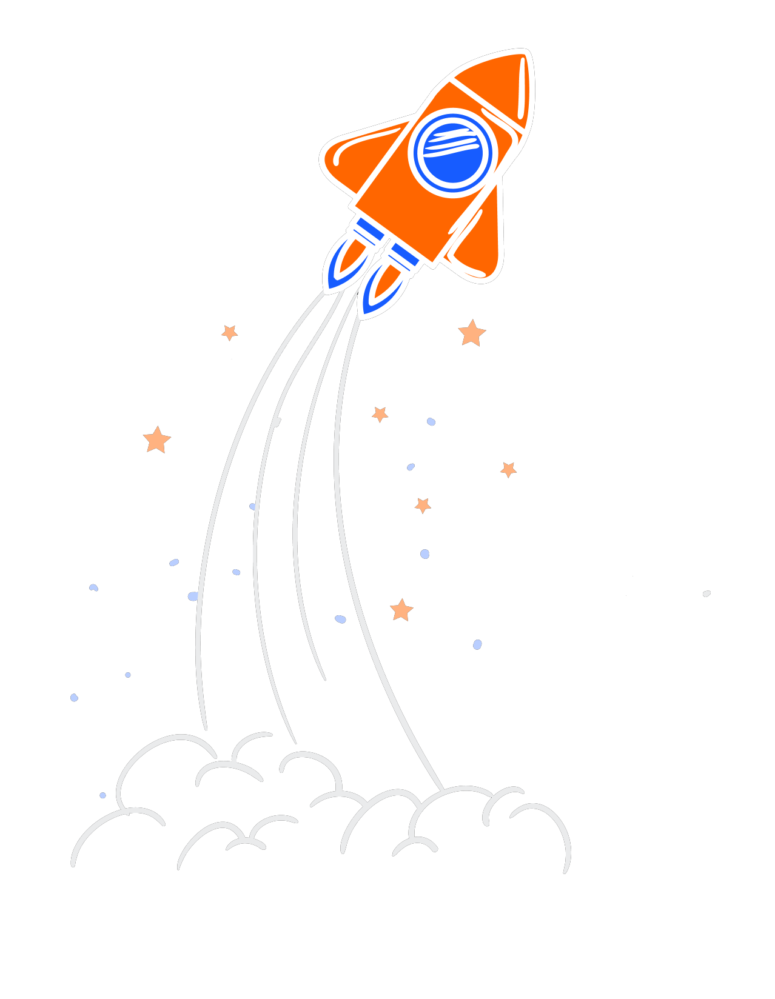

جت سئو ، راهنمای شما در مسیر سئو سایت
آنالیز رایگان سئوی سایت
ابزار تحقیق کلمات کلیدی، بررسی سئو رقبا، رهگیری رتبه کلمات کلیدی، بررسی خطاهای سایت
برای مشاهده تحلیل سئو سایت آدرس دامنه خود را وارد نمایید.آنالیز سئو سایت با جت سئو
بررسی سئو سایت یکی از مهم ترین بخشهای آنالیز سایت است که به شما کمک میکند تا استراتژیهای حرفهای و جذابی را برای سایت خودتان طراحی کنید.
جت سئو با تست و تحلیل سئو سایت شما میتواند مشکلات موجود را شناسایی کند و راهکارهای فوقالعادهای را در بخشهای زیر برای بهینهسازی سایت به شما پیشنهاد دهد.
- بررسی سایت از نظر فنی و محتوایی
- تحقیق کلمات کلیدی
- ارائه ساختار محتوا
- رهگیری رتبه کلمات کلیدی
- مشاهده خطاهای فنی سایت
- تجزیه و تحلیل رقبا
با کمک گرفتن از ابزار آنلاین آنالیز سایت جت سئو، میتوانید هوشمندانه سئو کنید و بالاتر از رقبا دیده شوید.
کافیست همین حالا عضو جت سئو شوید و با کلیک روی لینک زیر نتایج شگفتانگیز بررسی سئو سایت خودتان را ببینید.
جت سئو راهنمای سئو بیش از 35,000 نفر بوده است
سایتهای تحلیل شده
صفحات تحلیل شده
کلمات بررسی شده
بکلینکهای پیدا شده
+35,000 کاربر به ما اعتماد کردهاند
تحقیق کلمات کلیدی
اگر ندانید چه چیزهایی بیشتر در گوگل جستجو میشوند، چطور میخواهید در معرض دید مخاطبان بالقوه خود قرار بگیرید؟ با ابزار آنالیز سایت جت سئو میتوانید بهراحتی فرصتهای جدید را پیدا کنید و بیشتر دیده شوید. ما به شما کمک میکنیم تا بررسی کلمات کلیدی رقبا و کلمات پر سرچ، بهترین کلمات کلیدی را برای سایت خود پیدا کرده و فرآیند تحقیق کلمات کلیدی خود را کامل کنید.
- بررسی گسترهی جستجوی کلمات
- پیدا کردن کلمات کلیدی رقبا
- پیدا کردن شکافهای کلمات کلیدی
- بررسی سهم بازار
- بررسی سختی کلمات
ساختار محتوا
تحقیق کلمات کلیدی شروع ماجراست، ادامه داستان، نگارش یک محتوای درجه یک است تا از گوگل ورودی بیشتری بگیرید. جت سئو، به عنوان یک ابزار بررسی سئو سایت، شما را راهنمایی میکند که چطور یک مقاله مطابق اصول سئو بنویسید. کافیست کلمهای که میخواهید در آن رتبه بگیرید در ساختار محتوا وارد کنید تا به شما بگوییم چطور مقالهای بنویسید که گوگل عاشق آن شود.
- بررسی گسترهی جستجوی کلمات
- پیدا کردن کلمات کلیدی رقبا
- پیدا کردن شکافهای کلمات کلیدی
- بررسی سهم بازار
- بررسی سختی کلمات
رهگیری رتبه کلمات
میخواهید بدانید نتیجه تحقیق کلمات کلیدی و نگارش یک مقاله عالی چطور پیش میرود؟ با جت سئو میتوانید کلمات کلیدی خودتان را در گوگل رصد کرده و ببینید رتبه آنها بهتر شده یا افت کرده است. کافیست کلمات مهم خود را در بخش رهگیری رتبه کلمات اضافه کنید و این ابزار آنالیز سئو سایت آنها را سطح گوگل بررسی میکند و به شما نمایی از روند رشد رتبه کلمات شما میدهد.
>- بررسی گسترهی جستجوی کلمات
- پیدا کردن کلمات کلیدی رقبا
- پیدا کردن شکافهای کلمات کلیدی
- بررسی سهم بازار
- بررسی سختی کلمات
خطاهای سایت
اگر خطاهای فنی و محتوایی سایت را ندانید، پیشرفت سئوی سایت شما خیلی کند میشود. رباتهای ما تحلیل سئو سایت شما را انجام داده و خطاهای مهم آن را به شما نشان میدهند. البته نگران نباشید در مسیر رفع این خطاها، راهنماییهای لازم را به شما ارائه میکنیم. کافیست وارد بخش خطاهای محتوایی و فنی شوید و لیست خطاهای سایت را با جزییات بررسی کنید.
- بررسی گسترهی جستجوی کلمات
- پیدا کردن کلمات کلیدی رقبا
- پیدا کردن شکافهای کلمات کلیدی
- بررسی سهم بازار
- بررسی سختی کلمات
جت سئو مناسب چه کسانی هست ؟
کارشناسان سئو
یک متخصص سئوی خوب، نیاز به یک ابزار خوب دارد. جت سئو، سرویسی است که با ابزارهای داخلی آن می توانید همه نیازهای سئویی خودتان را برآورده کنید تا روند کارتان سریعتر شود.
دیجیتال مارکتر ها
سئو یک روش بازاریابی مهم برای هر دیجیتال مارکتری است. با جت سئو میتوانید سئوی سایت خودتان را شروع کنید و در ادامه مسیر هم روی راهنمایی ما حساب کنید.
صاحبان سایت
مهم نیست استارتاپ هستید یا سایت شرکتی و فروشگاه اینترنتی دارید، مهم این است که جت سئو به شما کمک میکند به صفحات اول گوگل برسید. با این سرویس قدرتمند نیازی نیست که متخصص سئو باشید تا از گوگل ورودی بگیرید، ما شما را راهنمایی میکنیم.
ﺍﻓﺰﻭﻧﻪ ﺟﺖ ﺳﺌﻮ ﺍﺯ ﺑﻬﺘﺮﯾﻦ ﺍﻓﺰﻭﻧﻪ ﻫﺎﯼ ﮐﺮﻭﻡ ﺑﺮﺍﯼ ﺳﺌﻮ
ﺑﺴﯿﺎﺭﯼ ﺍﺯ ﻓﻌﺎﻻﻥ ﺣﻮﺯﻩ ﺳﺌﻮ ﺑﺮﺍﯼ ﺭﺻﺪ ﺻﻔﺤﺎﺕ ﺳﺎﯾﺖ ﺧﻮﺩ ﺍﺯ ﺍﻓﺰﻭﻧﻪﻫﺎﯼ ﺳﺌﻮ ﻣﺨﺘﻠﻒ ﺧﺎﺭﺟﯽ ﺍﺳﺘﻔﺎﺩﻩ ﻣﯽﮐﻨﻨﺪ. ﺍﻏﻠﺐ ﺍﮐﺴﺘﻨﺸﻦ ﻫﺎﯼ ﺳﺌﻮ ﺻﺮﻓﺎ ﺑﺮﺍﯼ ﻫﺪﻓﯽ ﺧﺎﺹ ﻣﺜﻞ ﻧﻤﺎﯾﺶ ﻟﯿﻨﮏﻫﺎﯼ ﺩﺍﺧﻠﯽ ﻭ ﺧﺎﺭﺟﯽ ﯾﺎ ﻫﺎﯾﻼﯾﺖ ﺳﺮﺗﯿﺘﺮﻫﺎﯼ ﺻﻔﺤﻪ ﺳﺎﺧﺘﻪ ﺷﺪﻩﺍﻧﺪ. ﮐﻤﺘﺮ Extension ﺳﺌﻮﯾﯽ ﻭﺟﻮﺩ ﺩﺍﺭﺩ ﮐﻪ ﻫﻤﻪ ﺍﻣﮑﺎﻧﺎﺕ ﻣﻮﺭﺩ ﻧﯿﺎﺯ ﮐﺎﺭﺷﻨﺎﺳﺎﻥ ﺳﺌﻮ ﺭﺍ ﺑﻪ ﺻﻮﺭﺕ ﺟﺎﻣﻊ ﺍﺭﺍﺋﻪ ﺩﻫﺪ؛ ﺍﻣﺎ ﺍﮐﺴﺘﻨﺸﻦ ﺟﺖ ﺳﺌﻮ ﻣﺠﻤﻮﻋﻪ ﺍﯼ ﺍﺯ ﺗﻤﺎﻡ ﺍﻣﮑﺎﻧﺎﺕ ﺍﻓﺰﻭﻧﻪﻫﺎﯼ ﺩﯾﮕﺮ ﺳﺌﻮ ﺭﺍ ﺩﺭ ﺑﺮ ﺩﺍﺭﺩ.
ﺍﻓﺰﻭﻧﻪ ﺟﺖ ﺳﺌﻮ ﭼﻬﺎﺭ ﻗﺴﻤﺖ ﻣﺨﺘﻠﻒ ﺩﺍﺭﺩ ﮐﻪ ﺩﺭ ﺳﻪ ﻗﺴﻤﺖ، ﺗﺤﻠﯿﻞ ﺧﻮﺩ ﺍﺯ ﺻﻔﺤﻪ ﻣﺎﻧﻨﺪ ﮔﺰﺍﺭﺵ ﮐﻠﯽ ﺻﻔﺤﻪ (ﺷﺎﻣﻞ ﺑﺮﺭﺳﯽ ﺳﺮﺗﯿﺘﺮﻫﺎ، ﻟﯿﻨﮏﻫﺎ، ﻣﺘﺎ ﺗﮓﻫﺎ ﻭ ...) ، ﺗﺤﻠﯿﻞ ﻭ ﮔﺰﺍﺭﺵ ﻋﻤﻠﮑﺮﺩ ﺻﻔﺤﻪ ﻭ ﺭﺗﺒﻪ ﮐﻠﻤﺎﺕ ﮐﻠﯿﺪﯼ ﺭﺍ ﻧﻤﺎﯾﺶ ﻣﯽﺩﻫﺪ. ﺩﺭ ﺩﻭ ﻗﺴﻤﺖ ﺩﯾﮕﺮ ﺗﻐﯿﯿﺮﺍﺕ ﺁﺏ ﻭ ﻫﻮﺍﯾﯽ ﮔﻮﮔﻞ ﻭ ﻟﯿﻨﮏﻫﺎﯼ ﻣﻔﯿﺪ ﺳﺎﯾﺖ ﺟﺖ ﺳﺌﻮ ﻗﺮﺍﺭ ﮔﺮﻓﺘﻪ ﺍﺳﺖ.
تجربه پرواز با جت سئو
عادل طالبی
استراتژیست کسب و کارهای آنلاین سال هاست با انواع ابزارهای بازاریابی دیجیتال کار می کنم. هم ابزارهای ایرانی و هم ابزارهای خارجی. یکی از بهترین و کاربردی ترین ابزارهایی که در حوزۀ سئو از آن استفاده می کنیم، جت سئو است.شهاب شهوازیان
استراتژیست کسب و کارهای آنلاین وقتی یک سرویس داخلی تصمیم میگیرد خدماتی را ارایه دهد که مشابه آن توسط سرویسهای خارجی عرضه شده است، متقاعد کردن مشتریان خیلی سخت و پیچیده میگردد. یعنی باید این سرویس به قدری ارزش خلق کند که مشتریان ایرانی حاضر شوند از محصول استفاده کنند و در استفاده خود مداومت داشته باشند. این دقیقا کاری هست که جت سئو توانسته است به خوبی از انجام آن برآید. محصولی که به نظرم با تشخیص درست نیاز کسبوکارهای ایرانی راهحل مناسب، اقتصادی و ارزشمندی را ارایه میدهد.محمد زراعتی
مدیر بازاریابی دیجیتال پارس پک مدتها خلا یک ابزار سئو حرفهای که بشه روش حساب کرد حس میشد که الان جت سئو این جای خالی را تونسته پر کنهنغمه عقیلی
مدیر سایت استاد سلام بعضی روزا که خیلی سر حالم میزارم برم جت سئو کلی چیزها رو چک می کنم و درست می کنم و تسک میدم به بچه ها بعد وقتی میبندمش انگار از مرکز مراقبت های زیبایی سایت رو آوردم بیرون حس خوبی دارم. انگار کنترل اوضاع بهتر میاد دستم. فقط اولش سخته که از کجا شروع کنی بعدش یک راست متوجه میشین برای چه جوابی باید برید جت سئوتقی مولوی
مدیر شرکت اینتن جت سئو برای من چند مزیت عمده داشت اولا هزینه های سنگینی را که به ابزارهای خارجی میدادم بشدت کاهش داد دوما زمان گزارش نویسی به مشتریانمون را عملا صفر کرد و سوما با نتایج و راهکارهایی که میده واحد سئو مون خیلی راحت تر و با دقت بیشتری عمل می کنند و نهایتا لبخند رضایت مشتریان بزرگترین دستاوردش برای من و مجموعه اینتن هست.حمید خوشدست
مدیر سئو صباایده (فیلیمو، آپارات، سینماتیکت) تیم ما چندماهی هست که از ابزار جت سئو به عنوان یکی از ابزارهای اصلی برای بررسی و آنالیز استفاده میکند.جت سئو در بین ابزارهای ایرانی کاملا پیشرو و به روز، و نتایج استخراج شده از آن قابل اعتماد است.با توجه به بومیسازیهای انجام شده،و همچنین سطح کیفی بسیار مطلوب به نسبت نمونههای داخلی و خارجی،جت سئو امروز یکی از بهترین ابزارهای سئو موجود برای فارسی زبانان است.بررسی سئو سایت و آنالیز سایت شما با جت سئو
جت سئو ابزاری مفید برای بدست آوردن رتبه سایت در گوگل، برطرف کردن مشکلات سئو، تحقیق کلمات کلیدی و نظارت دقیق بر وضعیت سایت است که به وبمسترها کمک میکند تا رتبه گوگل خود را بهبود بخشند. جت سئو یک ابزار آنالیز سئو سایت جامع است که با توجه به نیازهای مدیران سایتهای ایرانی، تحلیل و طراحی شده است. این ابزار با استفاده از تکنولوژیهای نوین و دنبال کردن الگوریتمهای گوگل، میتواند بسیاری از مشکلات یک سایت را به شما نشان دهد که از دید متخصصین سئو و وبمستران پنهان مانده است.
نظارت دقیق بر روی تغییرات صفحات سایت شما، ارائه گزارشهای تصویری، تحلیل و آنالیز کلمات کلیدی، بررسی لینکهای داخلی و خارجی، گراف لینک، ارائه گزارش روزانه رتبه کلمات کلیدی در گوگل، گزارش کنونیکال، گزارش همنوع خواری، عنوان صفحات و متا توضیحات و ارائه راهکارهای مناسب جهت بهبود رتبه صفحات سایت در گوگل، برخی از امکاناتی هستند که جت سئو به عنوان اولین و تنها ابزار جامع سئو ایرانی، برای بررسی سئو سایت در اختیار کاربران خود قرار میدهد.
جت سئو یک ابزار بررسی آنلاین سئو سایت است که به بررسی سئو سایت میپردازد. در حال حاضر ابزار تحلیلی جت سئو به صورت رایگان ارائه شده و پیوسته امکانات جدیدتری به آن اضافه خواهد شد. شما هم میتوانید همین حالا به صورت 7 روز رایگان مشکلات سئو سایت خود را با جت سئو بررسی کنید.
